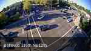
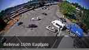
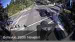
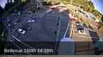
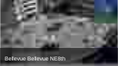
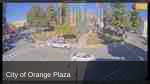
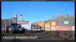
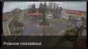

Bellevue 116th NE12th
Signalised intersection with wide-angle surveillance view.
Computer vision · traffic trajectories · reproducible research
An updated dataset and software framework for extracting, cleaning, transforming and analysing road-user trajectories from real-world traffic surveillance videos.
Traffic Node Video Dataset 2.0 extends the previously published Traffic Node Video Dataset and preserves its original purpose: providing reusable video and trajectory data for traffic analysis, modelling and movement prediction. The new release updates the complete processing chain and introduces a reproducible map-based correction workflow.
The dataset contains recordings from eight traffic scenes, including signalised intersections, roundabouts and a pedestrian-oriented urban plaza. Object detections, tracked trajectories, cleaned trajectories, transformation data and software examples are published together so that the processing stages can be inspected and repeated.
| Component | Previous release | Version 2.0 |
|---|---|---|
| Object detection | YOLOv7-based detection pipeline. | YOLO11x-based reprocessing with updated Ultralytics inference. |
| Object tracking | DeepSORT-based trajectory generation. | Ultralytics tracking workflow configured with ByteTrack. |
| Data storage | SQL and pickle-oriented trajectory exports. | Per-video Parquet detection tables and structured trajectory packages. |
| Trajectory preparation | Filtering, filling and ironing utilities. | Extended filtering, interpolation, smoothing, outlier analysis and reproducible examples. |
| Geometry | Image-plane coordinates. | Image-to-map homography, inverse projection, reprojection error and isotropic normalisation. |
| Reproducibility | Introductory examples and notebooks. | Expanded scripts, notebooks, sample data and a documented dataset package. |
Quantitative detector and tracker benchmark values will be reported in the associated publication after validation on the same annotated evaluation subset.
Each scene is represented by its original video material and the corresponding detection and trajectory records. The preview images below are served directly from this repository.

Signalised intersection with wide-angle surveillance view.

Complex signalised junction with multiple turning movements.

Urban intersection used in trajectory clustering experiments.

Multi-lane intersection suitable for lane-level analysis.

Dense downtown traffic with diverse vehicle movements.

Urban plaza with mixed vehicle and pedestrian activity.

Small-town street environment with different scale and perspective.

Roundabout scene used for detection and tracking demonstrations.
Loads manifests, per-video detections and trajectory records for Python-based analysis.
Plots raw, filtered, filled, smoothed and geometrically corrected trajectories.
Removes short, low-motion or application-specific trajectories and inspects OPTICS outliers.
Interpolates missing detections and stabilises position, bounding-box and motion features.
Estimates image-to-map transformation and calculates inverse projection and reprojection error.
Applies one shared spatial scale to preserve the relative geometry of the coordinate axes.
The repository contains executable examples for dataset loading, trajectory visualisation, filtering, filling, smoothing, homography estimation and normalisation.
| Package | Published content |
|---|---|
| 00_README_METADATA | Dataset manifest, scene metadata and processing configuration. |
| 01_ORIGINAL_VIDEO_REFERENCES | Original traffic videos and source references. |
| 02_YOLOV11X_DETECTIONS | YOLO11x detection data stored as per-video Parquet files. |
| 03_TRACKED_TRAJECTORIES | Tracked trajectory records and the trajectories.joblib export. |
| 04_CLEANED_TRAJECTORIES | Filtered, interpolated and smoothed trajectory variants. |
| 05_MAP_BASED_GEOMETRIC_CORRECTION | Control points, transformation matrices and corrected trajectory outputs. |
| 06_PERSPECTIVE_TRANSFORM_TOOL | Perspective transformation tool, examples and configuration. |
| 07_RESULTS_AND_STATISTICS | Generated summary tables, figures and validation outputs. |
| 08_FIGURES_FOR_PAPER_AND_PRESENTATION | Publication and presentation figures. |
| 10_SOFTWARE_TOOLS | Supporting scripts and software packages. |
Agg, A. D., Horváth, A.: Traffic Node Video Dataset 2.0: Enhanced Vehicle Trajectory Extraction with YOLO11x and Map-Based Geometric Correction. Tavaszi Szél Conference, 2026.
Final bibliographic details will be added after publication.